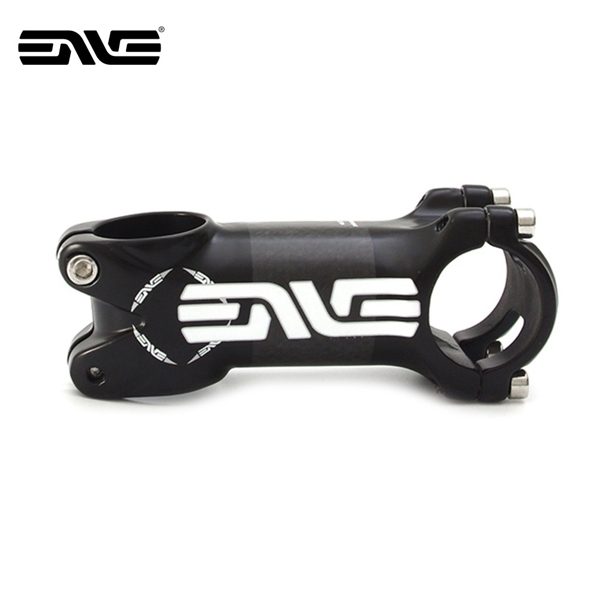

It is measured from the center of your steer tube to the center of your handlebar clamp along the central axis of your stem. Stem length typically ranges from 60mm to 150mm with some outliers in the extremes.